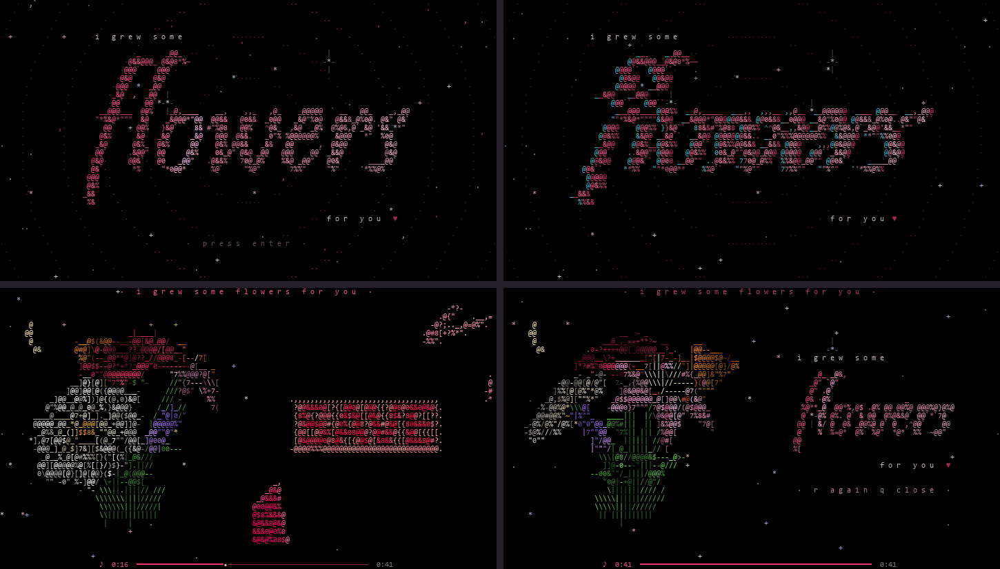
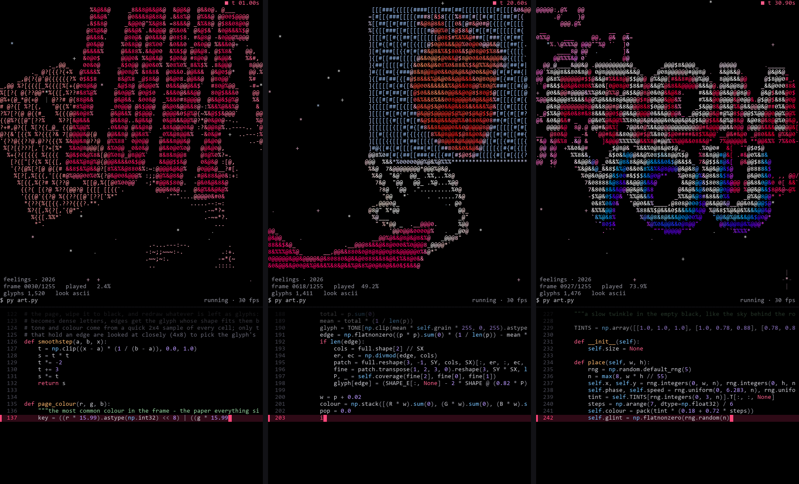

Windows Standalone Terminal Artwork
✦ · ✧ · ✦
i grew some
flowers
for you ♥
A card opens on a starry night. Press Enter and the card glitches and bursts into glitter. Then a garden of 3D mathematical flowers blooms, glows, and turns slowly, with the edit and song playing beside it.
✦ What It Looks Like In Your Terminal ✦


🚀 How to Run
-
Download the file: Click the button above to get
for you.exe. - First-time opening on Windows: Because it is a hand-made independent app, Windows SmartScreen may say "Windows protected your PC". Click More info → Run anyway.
- Turn sound on! The window will open in black for a few seconds while unpacking, then the starry card appears. Press Enter to begin.
⌨ Controls While It Plays
EnterBegin playback
↑ / ↓Turn bouquet faster / slower
RPlay it all again from start
Q or EscClose
Tip: Best in Windows Terminal or VS Code terminal for smooth 24-bit truecolour.